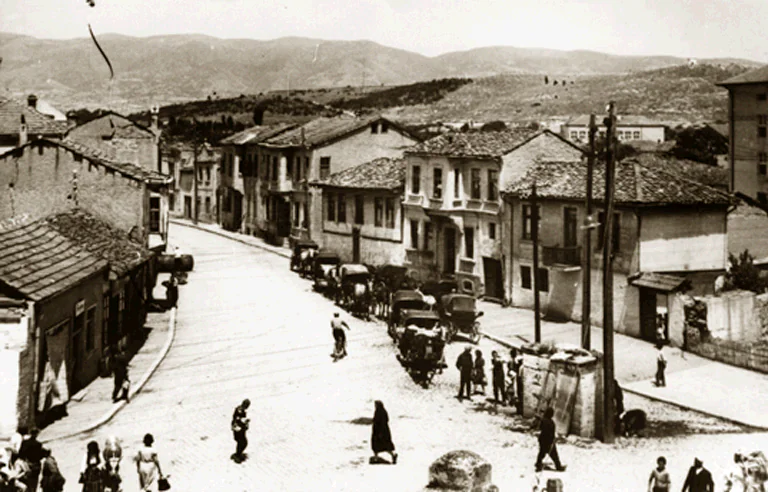
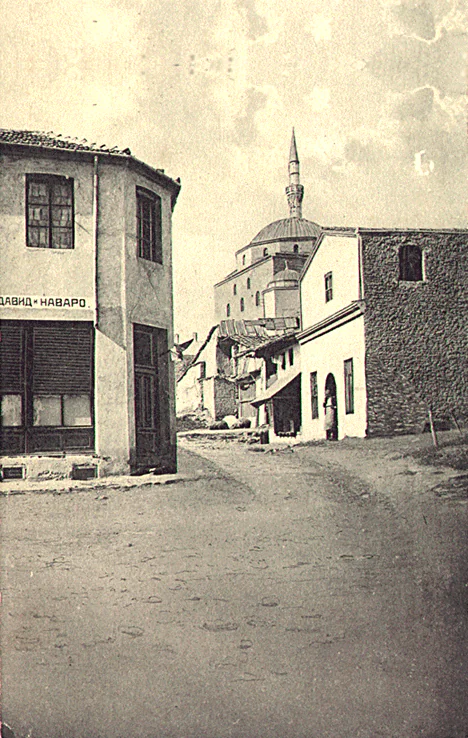
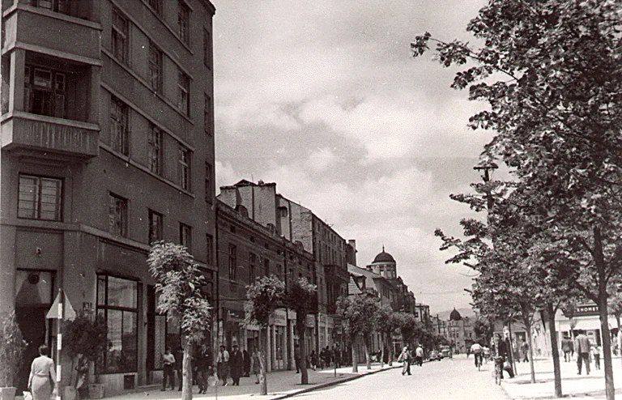
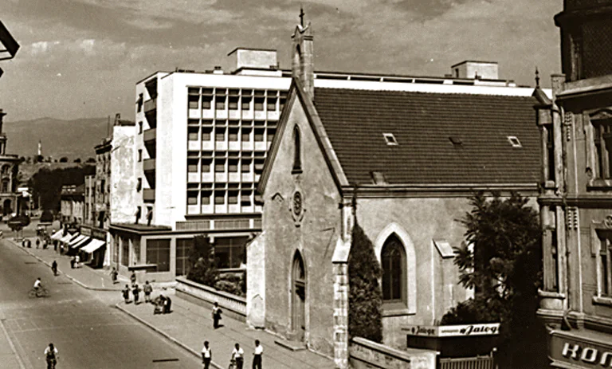

Зелена пијаца
- Продукција
- УФУЖ и Документарни филм Праг
- Сценарио и режија
- Славко Јаневски и EMAN CANERA
- Година
- 1959
- Трајање
- 00:18

Скопске хришћанске куће - 1870. година.

Део старе скопске чаршије, 1902. година. Низ дућана са кепенцима испред Куршумли хана. У позадини се види кула Ђулшен амама.

Главна улица у свом обликовању (данас је то улица „Македонија“, која се протеже од данашњег Музеја града Скопља ка Каменом мосту). На десној страни види се Католичка црква готског архитектонског израза, као и поједине зграде на левој страни. Део код Каменог моста поплочан је 1911. године, да би прошао султан Мурат V, који је дошао да посети Скопље пре свог одласка на Косово поље.

Фотографија је снимљена са објекта старе железничке станице - данашњег Музеја града Скопља, која је изграђена 1873. године за време Отоманског царства. У првом плану је прилаз железничкој станици, са ограђеним зеленим површинама. У продужетку је главна улица која води ка тргу. На почетку улице са леве стране је хотел „Русија“.

Поглед ка главној улици „Македонија“. Капија је постављена у част неког важног госта. Лево од ње је хотел „Русија“. - почетак 20. века.

Главна улица са хотелом „Москва“ - 1920-их

Главна улица, данашња Македонија, која води од данашњег Музеја града Скопља ка тргу. На крају улице види се Официрски дом, а десно од њега привредна трговинска комора - 1930-их.

Главна улица, фотографисана ка данашњем Музеју града Скопља - око 1920. године.

Главна улица (данашња Македонија), од трга ка железничкој станици - око 1920. године.

Главна улица, Македонија, од данашњег Музеја града Скопља ка тргу. Лево је хотел Бристол, а десно се види Крангова палата. (1930-их)

Главна улица која води од данашњег Музеја града Скопља ка тргу. Фотографисано код данашњег хотела „Бристол“ и Крангове палате. У позадини се види Официрски дом - око 1935. године.

Главна улица која води од данашњег Музеја града Скопља ка тргу. Објекат на углу је Крангова палата - 1930-их.

Крангова палата. - 1930-их.

Улица поред кеја на десној обали Вардара. - 1930-их

Улица у старом делу града ка старој чаршији - крај 19. века.

Улица од Каменог моста ка старој чаршији. - 1920-их

Улица у старом делу града, ка махали Чаир. У првом плану је стајалиште фијакера и стара турска чесма. У позадини су објекти старе народне архитектуре - 1920-их.

Камени мост ка старој чаршији. Слева је низ трговачких дућана, а сдесна зграда зубара др Рубена и низ трговачких дућана ка старој чаршији - око 1935. године.

Улица „Крушевска“ у Пајко махали, 1920-их.

Ова улица данас не постоји. Протезала се паралелно са главном улицом, од трга ка старој железничкој станици (данашњи Музеј града Скопља) - 1920-их

Главна улица (данашња „Македонија“) - 1920-их.

Улица у старој чаршији у Скопљу. У позадини Мустафа-пашина џамија. - 1930-их

Улица у старој чаршији у Скопљу. У позадини се види Мустафа-пашина џамија. - 1930-их

Улица „Цветан Димов“ у насељу Чаир, 1940-их. У позадини се види Мехмед-пашина џамија.

Скопље, 1950-их. Улаз у стару скопску чаршију - локација робне куће „Мост“. У првом плану је група дућана, срушених после земљотреса 1963. године. На левој страни види се део скопске тврђаве - Кале. У позадини је Мустафа-пашина џамија.

Мали трг у старој скопској чаршији, 1950-их.

Улица 11. октобар, фотографисана са трга ка данашњој Скупштини Р. Македоније. У позадини се види стара зграда Управе унутрашњих послова. - 1950-их

Улица 11. октобар са Скупштином Р. Македоније са леве стране. На левој страни види се и средњовековна кула. У задњем делу фотографије види се део зграде старе поште. - крај 1950-их

Улица „Гоце Делчев“, фотографисана са трга. У првом плану лево види се део хотела „Македонија“, који се срушио у земљотресу 1963. године. - 1950-их

Главна улица ка тргу. У првом плану је Католичка црква. - 1950-их

Главна улица у правцу железничке станице (данашњи Музеј града Скопља). Са леве стране види се Католичка црква. - 1950-их

Главна улица „Македонија“, ка тргу.- 1950-их

Скопље, 1950. година. Западни део главне улице. На левој страни је хотел „Москва“.

У првом плану је раскрсница улице 11. октобар и булевара Кочо Рацин. Десно од куле, која је у изградњи, види се стара војна пекара из Првог светског рата - 1950-их

Раскрсница булевара Кочо Рацин и улице 11. октобар. - 1950-их

Улица поред Градске болнице и Радничког универзитета - 1950-их

Улица 11. октобар - крај 1970-их, ка тргу „Македонија“.

Поглед из улице 11. октобар ка тргу „Македонија“. Са леве стране су стамбени објекти, а десно зграда Електропривреде. - крај 1970-их

 Аквадукт4 разгледнице
Аквадукт4 разгледнице Кале30 разгледница
Кале30 разгледница Мостови60 разгледница
Мостови60 разгледница Кеј58 разгледница
Кеј58 разгледница Трг46 разгледница
Трг46 разгледница Објекти66 разгледница
Објекти66 разгледница Хришћански храмови19 разгледница
Хришћански храмови19 разгледница Муслимански објекти33 разгледнице
Муслимански објекти33 разгледнице Официрски дом29 разгледница
Официрски дом29 разгледница Позориште28 разгледница
Позориште28 разгледница Железничка станица13 разгледница
Железничка станица13 разгледница Школе36 разгледница
Школе36 разгледница Паркови12 разгледница
Паркови12 разгледница Пијаце18 разгледница
Пијаце18 разгледница Улице38 разгледница
Улице38 разгледница Панорама I60 разгледница
Панорама I60 разгледница Панорама II30 разгледница
Панорама II30 разгледница Колажи55 разгледница
Колажи55 разгледница Поплаве9 разгледница
Поплаве9 разгледница Земљотрес27 разгледница
Земљотрес27 разгледница Скопље 200026 разгледница
Скопље 200026 разгледница